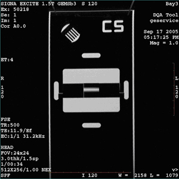

- 00000018WIA309CAE20GYZ
- id_131058592.2
- Oct 11, 2021 8:47:14 PM
DQA II tool and troubleshooting dv
| Required persons | Preliminary requirements | Procedure | Finalization |
|---|---|---|---|
| 1 | Not Applicable | 30 (varies) minutes | 10 minutes |
| Item | Quantity | Effectivity | Part number | Manufacturer |
|---|---|---|---|---|
| DQA III Phantom | 1 | - | 2321556 | - |
| Condition | Reference | Effectivity |
|---|---|---|
|
Laser light alignment completed. | - | - |
The DQA II tool determines proper gradient polarity (positive to positive and negative to negative) and proper gradient wiring (X amp drives X coil, Y amp drives Y coil, Z amp drives Z coil) by scanning a series of axial and coronal images of the DQA III phantom. The tool also verifies that the proper phantom is being used. After proper gradient orientation is confirmed, the tool adjusts for Z isocenter and gradient calibration. If Z iso adjustments or gradient calibration adjustments are required, the DQA II tool performs the appropriate iterations to complete. Therefore, the DQA II tool time to complete may vary.
Reviewing DQA II Images for Verification of Proper Head Scan
-
Note:Open the browser.Before performing the steps in this section, check the following:
- The latest exam has images labeled Axial (Coronal) and at least one of those images looks like (regarding the shapes and positions of phantom features) the axial (coronal) example image shown in this section.
- The acquired axial (coronal) image looks like the axial (coronal) example shown in this section (even if degraded by low SNR, ghosting, distortion, etc.).
If the axial (coronal) image does not look like the axial (coronal) image example in this section, a gradient wiring/setup problem exists. See the Gradient Cable Installation section of the applicable installation manual.
- Review the last exam.
The DQA II tool scans both axial and coronal images. Each scan has its own separate exam. The images to target for review (if needed) are those from the most recent DQA II related exam.
Figure 1. Example axial image at isocenter, post-calibration 
Figure 2. Example coronal image 
Example image of rotated, offset phantom

Finalization
- If this procedure was done as a standalone procedure, do a SaveInfo to save the newly created isovector and gradient calibrations. Otherwise, continue with regular system calibrations.